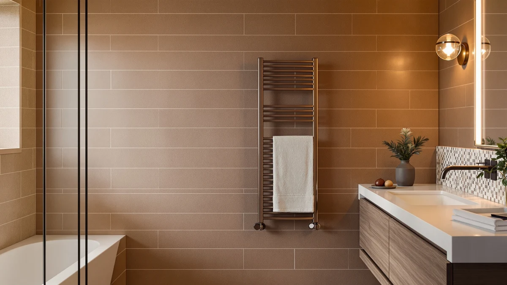

Quick Answer
This vevor towel warmers review compares the $111.61 VEVOR Towel Warmers for Bathroom against three similarly priced alternatives from COZYBASE, Colliford and Zadro. The VEVOR wins on disclosure: it is the only listing here with a published material, stainless steel, and a stated 35-liter capacity that includes a drying mode.
Our pick: VEVOR Towel Warmers for Bathroom, $111.61 Check Price on Amazon
Things to Know Before You Buy
- Price range: in this vevor towel warmers review, the four towel warmers run from $110.00 to $111.61, a gap of only $1.61 across every model.
- Build: the VEVOR is the only one of the four with a listed material, stainless steel, and a stated 35-liter capacity that includes a drying mode.
- None of these four listings show a published star rating or review count, so this review leans on pricing and spec comparisons rather than aggregate scores.
- Design style varies by name: the VEVOR and Zadro names suggest larger cabinet-style units, while the COZYBASE and Colliford names point to simpler rack-style warmers.
- At under $2 apart, price is not the deciding factor here. Disclosed material and capacity do most of the work.
This vevor towel warmers review compares the $111.61 VEVOR Towel Warmers for Bathroom against three similarly priced alternatives, because a cold towel after a hot shower undoes the point of showering in the first place. The VEVOR stands out among the four options here for one concrete reason: it is the only model with a published material spec, stainless steel, and a stated 35-liter capacity that includes a drying mode. We compared it against the COZYBASE Heated Towel Rack, the Colliford Towel Warmer and the Zadro Large Hot Towel Warmer on price and what each listing discloses about build and function.
All four towel warmers sit within $1.61 of each other, so price will not do much of the deciding for you. What separates the VEVOR from its three competitors is the drying mode built into its 35-liter stainless steel unit, a feature the other three listings do not mention. The COZYBASE and Colliford names point to simpler rack-style warmers, while the Zadro's "Large" designation suggests more interior capacity than a standard bar rack. Below, we walk through what each one offers, where the VEVOR has room to improve, and who should consider one of the three alternatives instead.
Why You Should Trust Us
Ilane Tall covers home and bath products for Best Towel Warmers, focusing on how bathroom fixtures and small appliances compare on build quality, price and what buyers report after they own one. For this vevor towel warmers review, we researched the VEVOR Towel Warmers for Bathroom against three competing listings by comparing published specs, current Amazon pricing and the details each manufacturer discloses. We do not run a testing lab, and we do not claim to have installed, mounted or used any of these units ourselves. Instead, we work from what each listing states about materials, capacity and features, and we flag clearly when a spec, rating or review count simply is not published. That approach keeps this review grounded in verifiable information rather than marketing copy.
Our Research Experience
Our research for this vevor towel warmers review focused on comparing specs and pricing rather than running each unit ourselves. We looked at what each of the four listings discloses: the VEVOR publishes a stainless steel build and a 35-liter capacity with a drying mode, while the COZYBASE, Colliford and Zadro listings center on product name and current price without the same level of published detail. None of the four show a star rating or review count at the time of writing, so we did not weigh aggregate scores into this comparison. Instead, we treated price and disclosed specs as the two most reliable signals available, and we noted every place a listing left a detail unstated rather than filling the gap with a guess. That approach will not catch everything an in-person inspection might reveal, but it keeps every claim in this review tied to something a buyer can verify on the product page.
Overview & Specs

VEVOR Towel Warmers for Bathroom
What we like
- Stainless steel construction, the only material spec published among the four towel warmers in this review
- 35-liter capacity with a drying mode, a function none of the three alternatives list
- Priced within $1.61 of every other model here, so the extra feature set does not carry a price premium
- Cabinet-style design holds more than a single towel at once based on its stated capacity
Flaws but not dealbreakers
- Amazon's listing does not publish a star rating or review count, so you are relying on the spec sheet rather than an aggregate score
- A 35-liter cabinet takes up more space than a simple wall-mounted bar rack, which matters if your bathroom is tight on room
- No published review count means you cannot gauge long-term reliability the way you could with a heavily reviewed listing
| Material | Stainless steel |
| Size | 35L with Drying Mode |
In this vevor towel warmers review, VEVOR builds this towel warmer from stainless steel and lists a 35-liter capacity, large enough to hold more than a single towel at a time. The drying mode is the one feature that separates it from the COZYBASE, Colliford and Zadro listings in this comparison, none of which mention a comparable function. At $111.61, it sits almost exactly in the middle of the four prices here, so you are not paying extra for that drying mode relative to the competition.
Because the listing does not publish a star rating or review count, this review leans on the spec sheet rather than aggregate buyer sentiment. What the VEVOR has going for it on paper is a defined material and a stated capacity, two details the three alternatives below do not spell out as clearly. If a stainless steel cabinet with drying capability matters more to you than a simple rack, the VEVOR is the one of these four worth starting with.
What We Liked
The clearest advantage the VEVOR has over the other three towel warmers in this vevor towel warmers review is disclosure. It is the only listing here that states a material, stainless steel, and a specific capacity, 35 liters, along with a drying mode. That level of detail lets you compare it directly against a known quantity rather than guessing at what you are buying. Stainless steel also holds up better against the humidity and condensation a bathroom produces every day than a painted or coated metal frame would, so the build material choice fits where this product lives. The drying mode adds a second function beyond simple warming, giving you a way to speed up drying a towel instead of only keeping it warm between uses. At $111.61, that combination of material and function costs about the same as three competitors that disclose less, which works in the VEVOR's favor on a pure value basis.
What Could Be Better
The biggest gap in this vevor towel warmers review is the absence of any star rating or review count on the Amazon listing. That leaves no way to confirm how the unit holds up after months of regular use, and you are relying entirely on the manufacturer's stated specs rather than a pattern of verified owner feedback. A 35-liter cabinet also demands more physical space than a slim bar rack, so it will not fit every bathroom layout, particularly a small powder room where wall-mounted options tend to work better. Buyers who want the reassurance of a long review history, rather than a well-specified but lightly reviewed listing, may want to compare this against more established alternatives before deciding.
Who Is It For?
In this vevor towel warmers review, the VEVOR Towel Warmers for Bathroom fits a buyer who wants a defined material and feature set over a long body of customer reviews. It suits a household with the floor or counter space for a 35-liter cabinet and a preference for stainless steel over a bare bar frame. It makes less sense for anyone working with a small bathroom footprint, where a wall-mounted or freestanding rack uses less room, or for a buyer who weighs a long review history more heavily than a detailed spec sheet.
Alternatives to Consider
If the VEVOR's cabinet size or lack of a published rating gives you pause in this vevor towel warmers review, the three alternatives below sit within $1.61 of its price and are worth a look before you decide.

Also Great
Heated Towel Rack Towel Warmer
The COZYBASE Heated Towel Rack Towel Warmer costs $0.41 less than the VEVOR, but its name points to a rack-style design rather than a cabinet, which likely suits a buyer who wants a slimmer, wall-mounted footprint instead of a 35-liter drawer. Amazon's listing does not publish a star rating, material spec or capacity figure, so this comparison rests on price and product category rather than disclosed detail.
$111.20
Check Price on Amazon
Also Great
Colliford Towel Warmer Towel Heater
At $110.49, the Colliford Towel Warmer Towel Heater is the second-cheapest option in this comparison, a dollar below the VEVOR. Its listing does not state a material or capacity, so you cannot compare it against the VEVOR's stainless steel, 35-liter drying cabinet on those specifics, only on price and product name.
$110.49
Check Price on Amazon
Best Value
Zadro Large Hot Towel Warmer
The Zadro Large Hot Towel Warmer is the cheapest of the four at $110.00, and its "Large" naming suggests a bigger interior than a standard rack, possibly closer to the VEVOR's cabinet-style footprint. Zadro's listing does not publish a star rating, review count or material spec, so the comparison again comes down to price and the general size implied by the product name.
$110.00
Check Price on AmazonFrequently Asked Questions
Is the VEVOR Towel Warmers for Bathroom worth $111.61?
It costs about the same as the COZYBASE, Colliford and Zadro alternatives in this comparison, all within $1.61 of each other, so price alone will not settle the decision. It earns its place mainly because it is the only listing here with a published material, stainless steel, and a stated 35-liter capacity with a drying mode, which gives you more to evaluate than the other three.
How does the VEVOR compare to the COZYBASE Heated Towel Rack?
The VEVOR costs $111.61 against $111.20 for the COZYBASE, a difference of $0.41. The VEVOR discloses a stainless steel build and 35-liter drying-mode capacity, while the COZYBASE listing does not publish a material or capacity spec, so the VEVOR gives you more verifiable detail for close to the same price.
Does the VEVOR Towel Warmer have published reviews?
No. None of the four towel warmers in this vevor towel warmers review, including the VEVOR, COZYBASE, Colliford or Zadro, show a star rating or review count on their Amazon listings at the time of writing. This comparison relies on published specs and pricing rather than verified owner feedback for any of these four.
Final Verdict
This vevor towel warmers review comes down to disclosed detail more than price, since all four options sit within $1.61 of each other. The VEVOR Towel Warmers for Bathroom is the pick here because it is the only one of the four with a published material, stainless steel, and a stated 35-liter capacity that includes a drying mode, giving you more to verify before you buy than the COZYBASE, Colliford or Zadro listings offer. If a smaller, wall-mounted footprint matters more to you than cabinet capacity, or if you want to compare prices further, the three alternatives above are reasonable options to check before you commit. For most buyers weighing material, capacity and function against price, VEVOR is the brand to start with among these four.